Instagram Dynamic Ads
Meta wanted to expand ad formats from Facebook to Instagram, and Stories was one of the most used surfaces in the entire family of apps.
The format shipped, generated over $1 billion in revenue in its first year, and has grown to more than 10% of all Instagram ad format revenue.
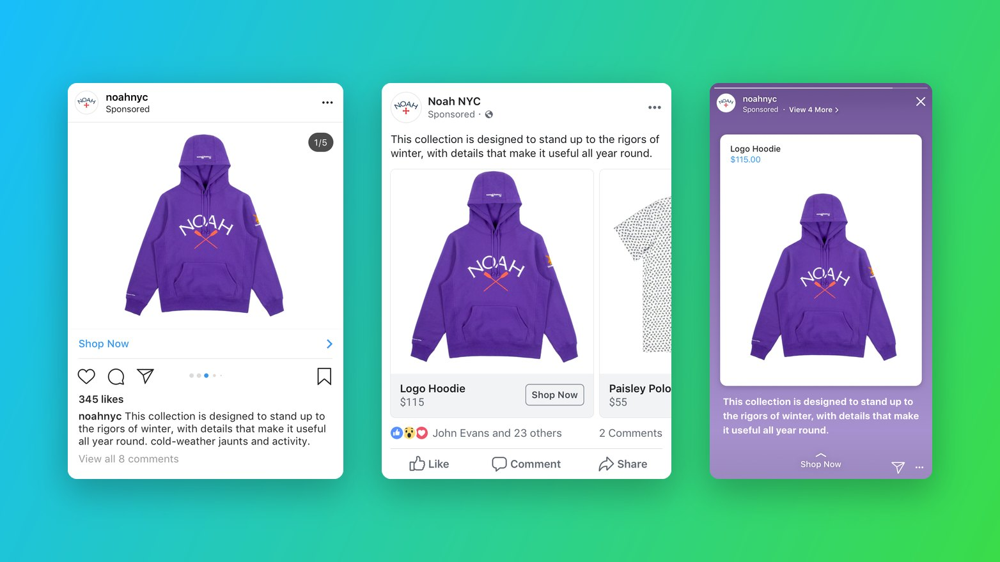
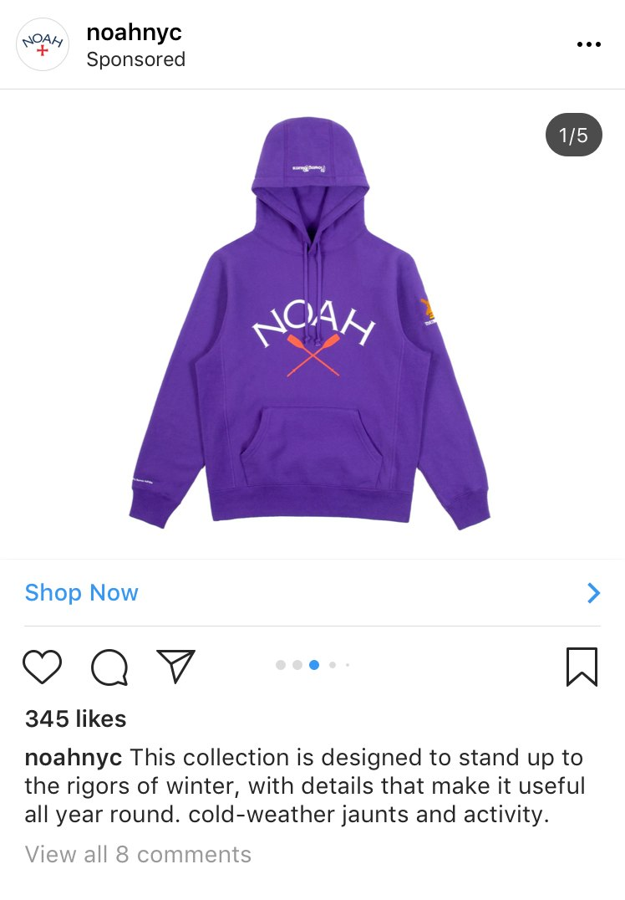
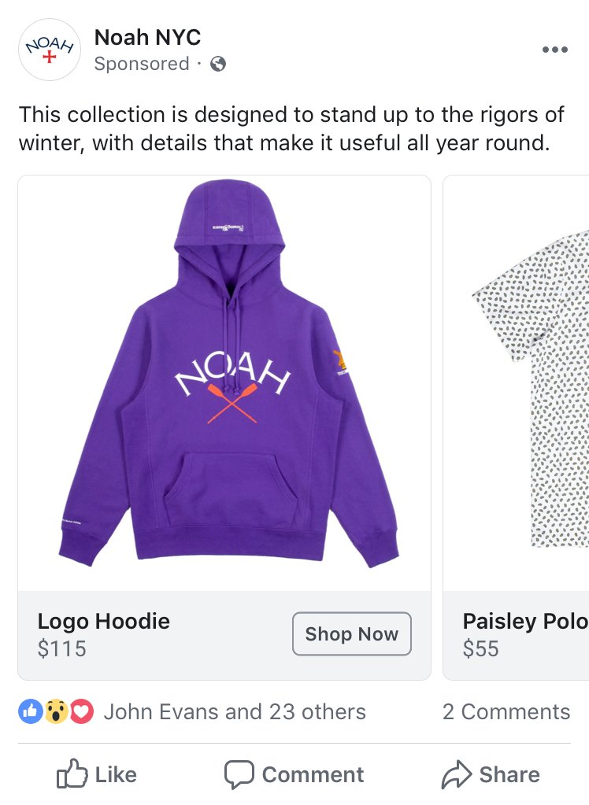
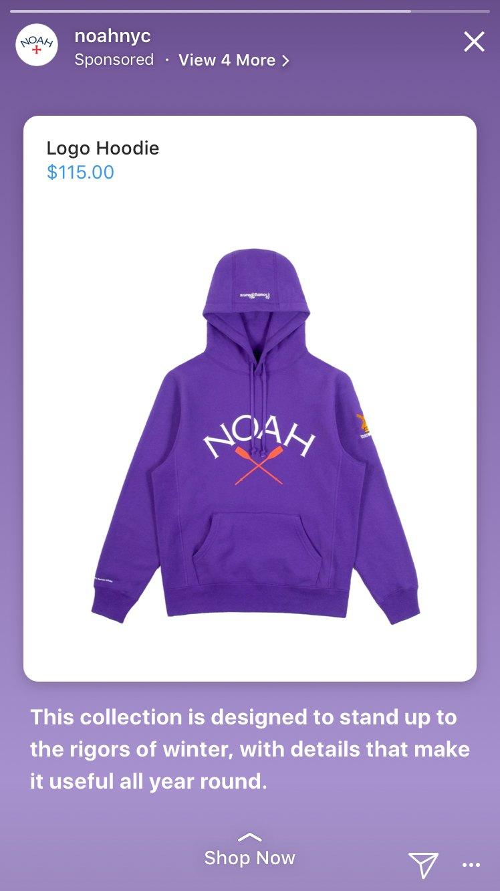
My first step to understanding the format was auditing all the types of products and advertisers that use this format. It was mostly large companies with massive catalogs.
I prototyped multiple iterations of the interactions, to get a better feel for how these ads fit in the fast consumption stories viewer.
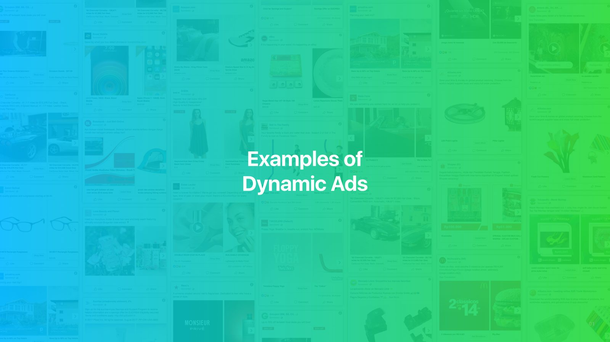
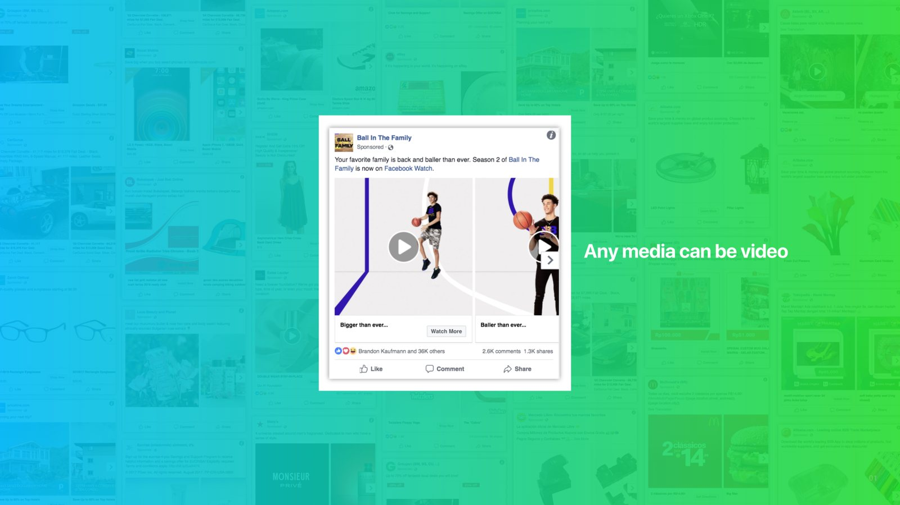
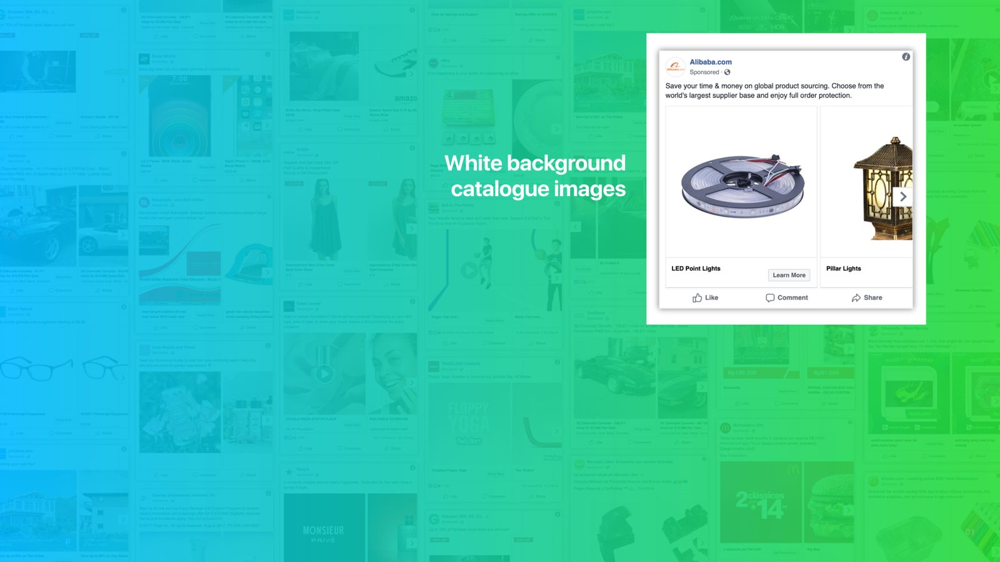
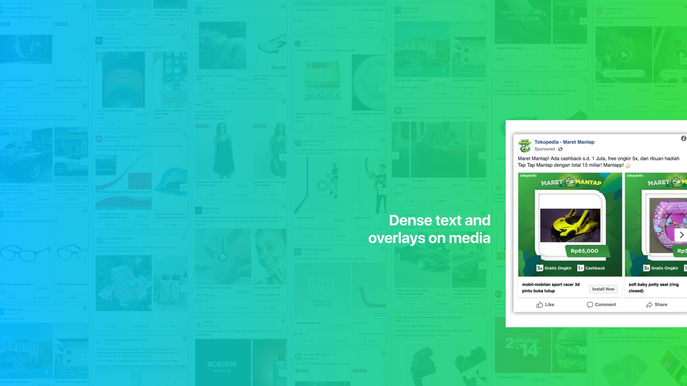
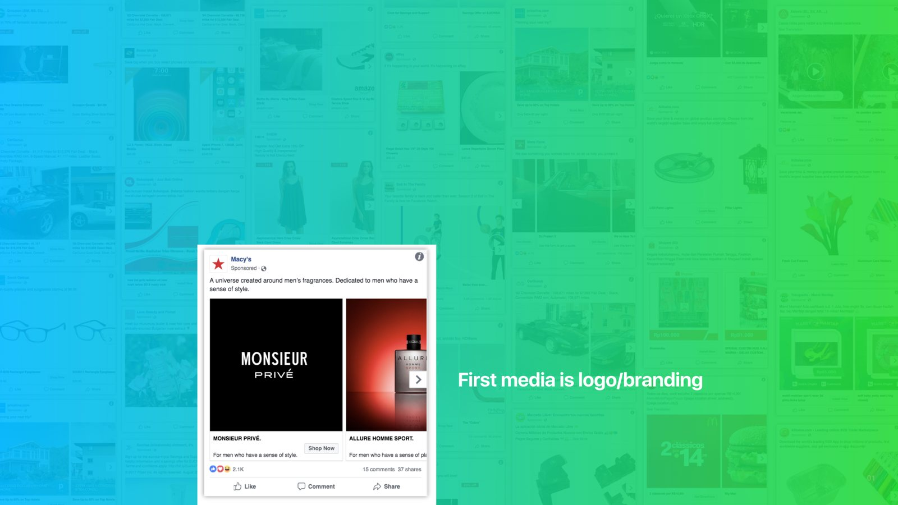
Showing the next product on a slight offset alignment to the viewer, indicating more things off to the right in the direction of swiping or tapping.
Showing variety of products and a delightful animation to help grab people’s attention if they have intent about a product.
Showing variety of products and a delightful animation to help grab people’s attention if they have intent about a product.
Iterating more on the product cards with text below, and using the segments at the top to indicate smaller sections beyond the first.
Animating the products in the first segment with a much larger opening CTA was hotly debated as a solution. We decided this felt too foreign from the rest of the UI, and the double buttons problem was not ideal.
Using the small text link at the top was originally used for stories and app attribution. I thought this was going to be ineffective as an ads CTA, but through testing we learned this struck the right balance between the bottom “shop now” swipe that was used as primary.
Tapping on a link in stories follows the pattern of viewing a post that was shared to stories. This sharing method was super popular amongst users, but it drained on UGC. I was able to make sure IG leads were ok using this for ads since it presented a second layer of confirmation and intent.
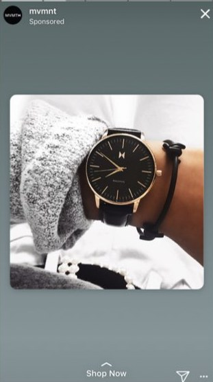
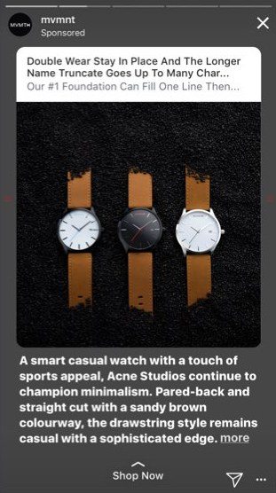
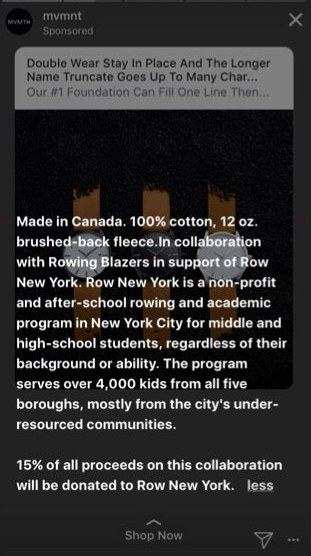
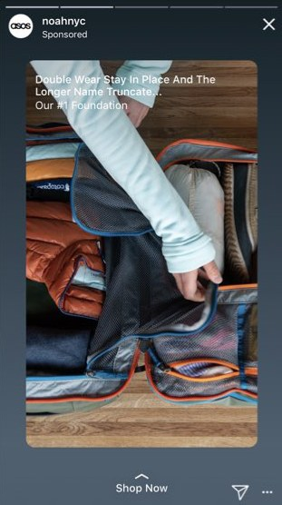
Use recognizable interactions
Story consumption is a fast surface, so people should be able to take action with familiar gestures or taps.
Apply UXR feedback continually
Getting early prototypes in the hands of users was the best way to gauge how real ads would feel in the variations. Applying those learnings quickly sped up build time.
Ad relevancy matters
Even with a small entry point to see more, if people are interested in the products they will open it. This version was much less disruptive than some of the larger CTA versions.